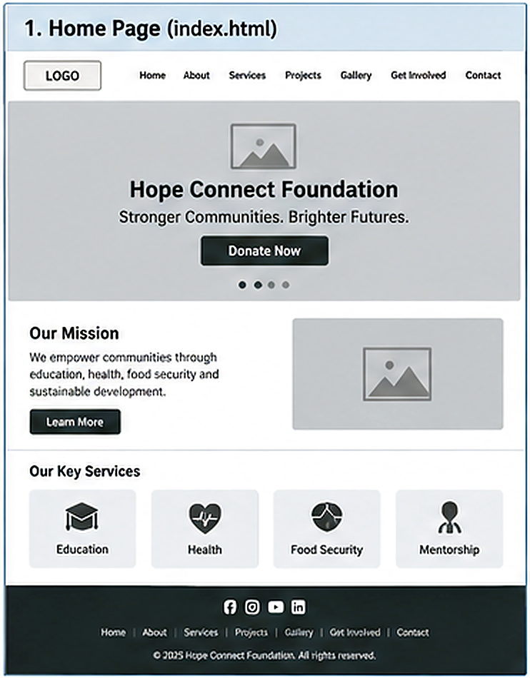
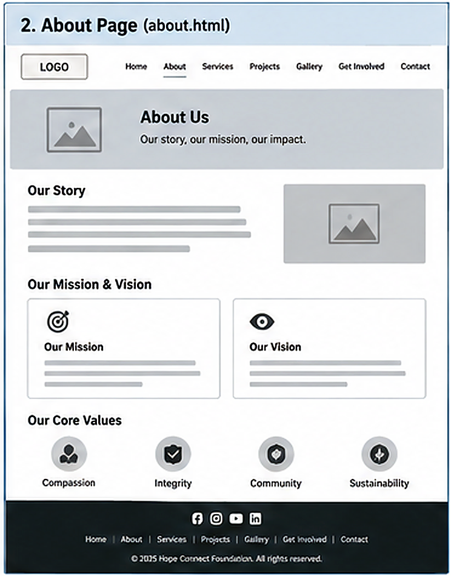
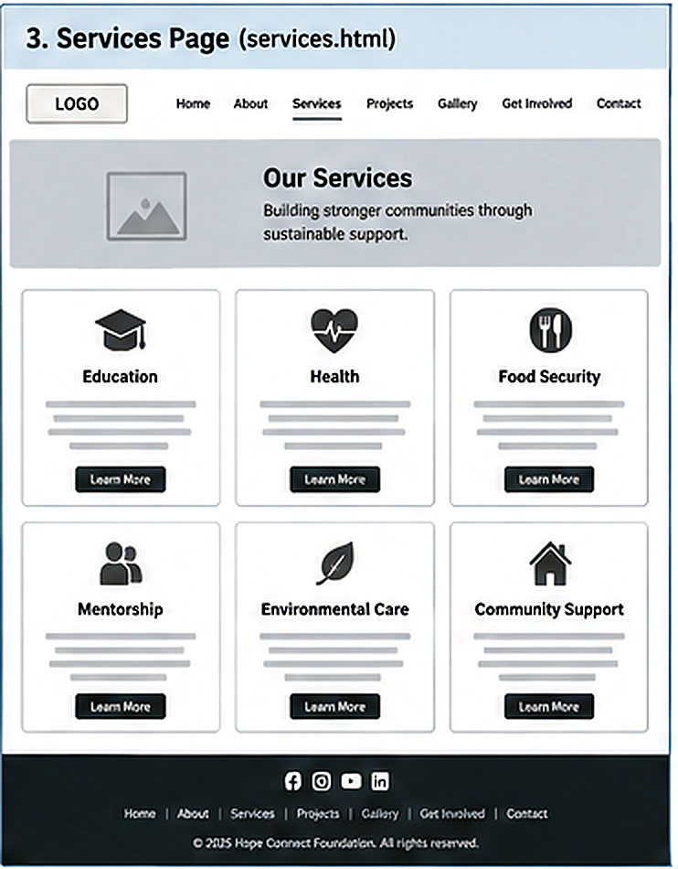
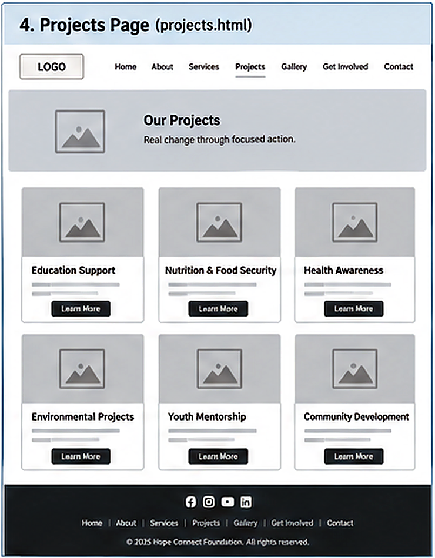
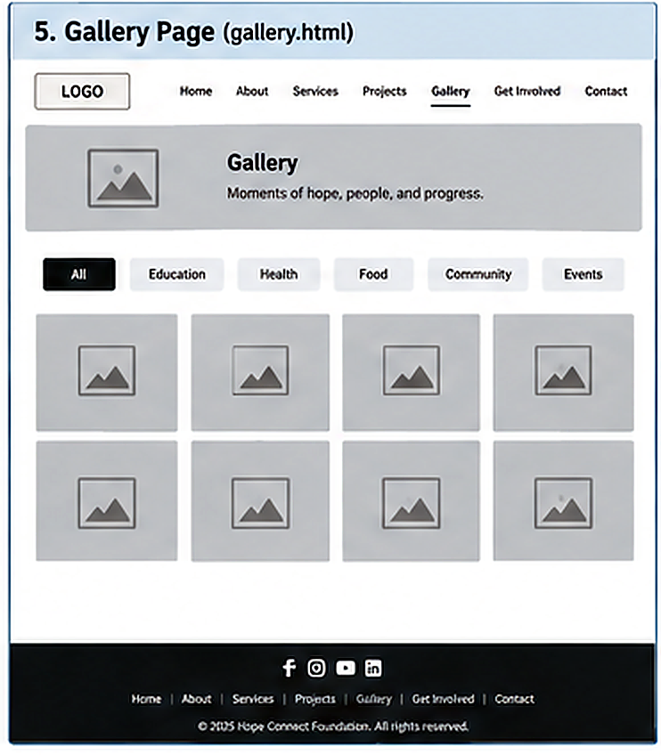
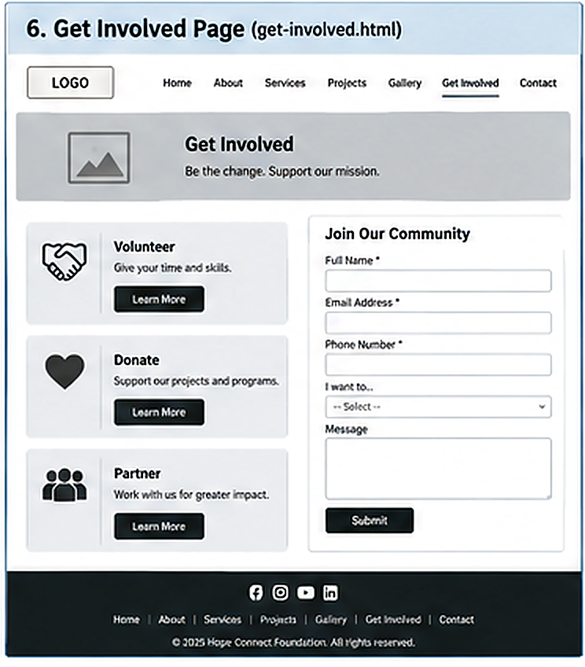
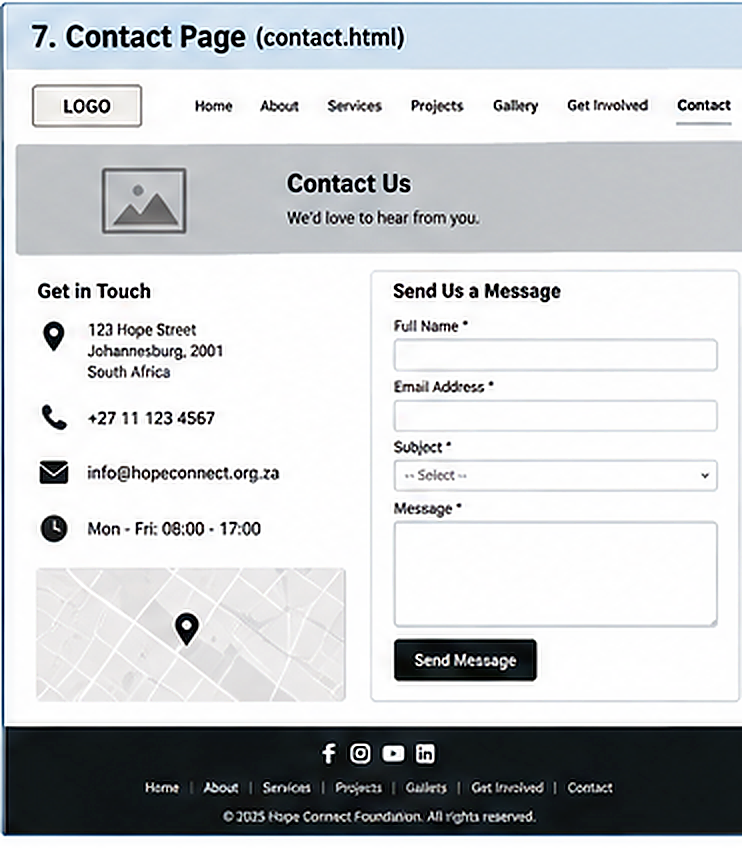

1. Home Page (index.html)

Separate wireframe evidence for the seven planned website pages.
These wireframes show the planned structure, navigation, content sections and calls to action before final visual styling.






